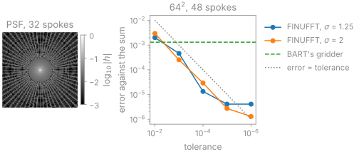

Non-Cartesian transform#
TL;DR
Every NUFFT, in an operator or inside a BART command, is FINUFFT’s on the CPU and cuFINUFFT’s on a CUDA device; BART’s gridder is never built.
The transform is computed to a tolerance, \(10^{-3}\) on a grid oversampled by 1.25 by default, set through
-oand-woroversamplingandwidth.The normal operator is a convolution with a point spread function that FINUFFT computes and BART stores and applies.
A radial, spiral or other non-Cartesian readout samples k-space off the grid,
so its Fourier transform is a non-uniform FFT (NUFFT) rather than an FFT. You
meet it in NUFFT and
NoncartesianSense, and inside nufft, pics, nlinv
and moba whenever you pass a trajectory. Lesson 7 of the
Course computes the transform, density
compensation and the point spread function, and lesson 8 reconstructs radial
SENSE.
Capabilities#
Computes the forward and adjoint NUFFT with FINUFFT on the CPU and cuFINUFFT on a CUDA device, to the transform’s tolerance.
Code:
NUFFT,src/csrc/substitute/finufft.c. Tests: matches an explicit dft on a radial trajectory; adjoint identity holds; a trajectory on a card is transformed by cufinufft (test_finufft.py).Answers every NUFFT BART’s commands build, and builds BART’s gridder zero times.
Code:
src/csrc/substitute/nufft_finufft.c. Tests: nothing builds barts own nufft; barts nufft tool matches an explicit dft with finufft underneath; pics reconstructs the same image either way (test_finufft.py).Refuses a transform FINUFFT cannot serve, with the reason, instead of falling back to BART’s gridder.
Code:
BartError,bartorch_nufft_decline_text. Tests: a transform finufft cannot serve is an error rather than barts gridder; barts own gridder is reachable only from inside the package (test_finufft.py).Takes the oversampling and kernel width you ask for, as BART’s
-oand-wor asoversamplingandwidth.Code:
NUFFT. Tests: barts oversampling is finuffts upsampling; a kernel width asked for buys the accuracy that width buys; precision can be traded for a transform that fits (test_finufft.py).Runs coil calibration (
nlinv,ncalib) at a tolerance of \(10^{-6}\) on a grid oversampled by 2.Code:
_CALIBRATESin_dispatch.py. Tests: a tool that calibrates gets the careful transform (test_finufft.py).Estimates density compensation weights for any trajectory, and carries weights inside the operator.
Code:
estimate_density(),weights=ofNUFFT. Tests: the weight rises with radius; it beats the ramp on the image (test_density.py); weights multiply the transform and their conjugate its adjoint (test_finufft.py).Applies the normal operator as a convolution with a point spread function computed by FINUFFT, in every storage BART offers.
Code:
src/csrc/substitute/psf.c,toeplitz=. Tests: the toeplitz normal is the transform pair it stands for; a point spread function is the substituted transforms; every way bart stores a point spread function is served (test_finufft.py).Applies one operator to host and device arrays alike, planning on each side the first time it is used there.
Code:
src/csrc/substitute/nufft_finufft.c. Tests: one operator serves both sides of the bus (test_finufft.py).
Division of responsibility#
BART: the NUFFT operator its commands build, and the storage and application of the point spread function’s transfer function.
bartorch: the substitution of FINUFFT under BART’s NUFFT and point spread function, the conversion of
-oand-w, and density estimation.Other libraries: FINUFFT and cuFINUFFT compute the transform. Gradients with respect to the trajectory or a field map are not computed here (the backward pass of an operator is its adjoint in the image or the samples); mri-nufft provides them.
Method#


The figure is computed with bartorch by scripts/figures/nufft.py. Left, the
point spread function of an undersampled radial trajectory: a central peak,
and streaks beyond the radius the spokes sample at the Nyquist rate. Right,
the error of the forward transform follows the tolerance down to
single-precision round-off, at either oversampling; BART’s own gridder is
drawn for comparison.
Spreading, FFT and deapodization#
For an image \(x\) of \(N\) voxels and sample positions \(k_j\) in grid units (multiples of \(1/\mathrm{FOV}\), from \(-n/2\) to \(n/2\)),
with \(m\) the voxel index about the image centre. This is FINUFFT’s type-2
transform; the adjoint is its type-1 transform with the positive exponent. The
forward transform divides the image by the Fourier transform of the kernel
(deapodization), zero-pads it to a grid oversampled by \(\sigma\), applies an FFT
and interpolates onto the samples with the kernel; the adjoint spreads the
samples onto that grid, applies the inverse FFT, crops and
deapodizes.[1] FINUFFT chooses the kernel width from the tolerance and
\(\sigma\), so -w is carried across as the tolerance that gives that width.
cuFINUFFT accepts \(\sigma = 2\) and \(\sigma = 1.25\) only. A \(k_z\) that is zero
throughout makes the transform two-dimensional.
Density compensation#
The adjoint is not an inverse: it adds every sample onto the grid, so densely
sampled regions are weighted more, and a radial adjoint is blurred by the
\(1/\lvert k \rvert\) density. Weights \(d_j \approx 1/\rho(k_j)\) from
estimate_density(), the fixed-point iteration of Pipe and
Menon,[2] equalize it for a gridding reconstruction. A regularized
reconstruction needs none; weights passed to the operator multiply the samples
on the forward pass and their conjugate on the adjoint, so the normal is built
over \(\lvert w_j \rvert^2\).
Toeplitz normal#
The transform’s normal operator is a convolution with the point spread function
whose support spans twice the image. It is applied exactly on a grid doubled
along each axis: zero-pad, FFT, multiply by the transfer function, inverse FFT,
crop.[3] FINUFFT computes \(h\) as an adjoint transform of
\(\lvert w_j \rvert^2\), and BART stores and multiplies its transfer function in
whichever form --nufft-conf selects. toeplitz=False, or
pics --no-toeplitz, applies the forward and adjoint transforms instead. The
storage forms and the compressed function’s mask are in
NUFFT substitution.
Examples#
7. Basics of non-Cartesian imaging: radial and spiral trajectories, the NUFFT, density compensation and the point spread function.
8. Radial SENSE: golden-angle radial SENSE with coil sensitivities estimated from the radial data.
Dynamic golden-angle radial MRI: a golden-angle series cut into frames after the acquisition and reconstructed jointly.